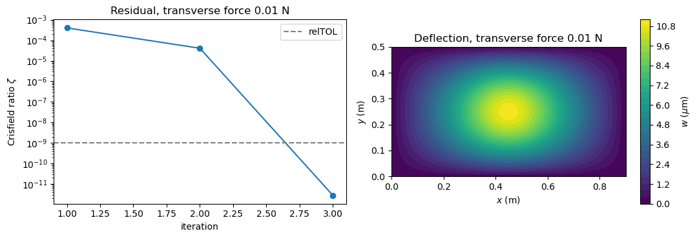
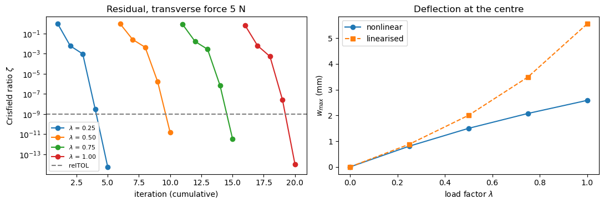
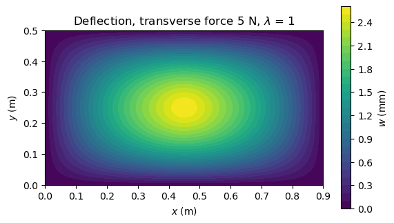

Nonlinear static analysis#
A simply supported rectangular isotropic plate, compressed along \(x\) below its first buckling load and loaded by a transverse force at the centre, so that it deflects out of plane instead of staying on the flat path. Two transverse loads are analysed:
a small one, for which the response is the linearised one, compared with the solution of the linear static problem with the stiffness reduced by the geometric stiffness of the axial load;
a large one, reaching a deflection of about 2.6 times the thickness, where the membrane stretching of the von Kármán strains [1] carries part of the load and the plate is stiffer than the linearised prediction.
The same model is checked in tests/test_static_axial_load_nonlinear.py.
Theory#
For deflections of the order of the thickness or larger, the equilibrium
is solved for the displacements at increasing values of the load factor \(\lambda\). Each Newton-Raphson iteration solves
with all the matrices computed with the current displacements, from update_KC0, update_KCNL and update_KG, and \(\boldsymbol{F}_{int}\) from update_fint. Since \(\boldsymbol{K}_T\) is the exact Jacobian of \(\boldsymbol{F}_{int}\), the iterations converge quadratically near the solution: each step squares the residual. With an inconsistent tangent the residual falls by a roughly constant factor instead.
Below the buckling load, the response to a small transverse load \(\boldsymbol{F}_t\) superposed on the in-plane load \(P\) tends to the linearised solution
with \(\boldsymbol{K}_G(P)\) of the static solution of the in-plane load alone. Its amplification over the response to the transverse load alone, \(\boldsymbol{K}_{C0}^{-1} \boldsymbol{F}_t\), is below the single-mode ceiling \(1/(1 - P/P_{cr})\), \(P_{cr}\) the first buckling load, since a point load excites many modes.
The nonlinear equilibrium is solved with the full Newton-Raphson method of structsolve.Analysis, the tangent stiffness matrix rebuilt at every iteration, with Crisfield’s convergence criterion: the residual and the reference forces scaled with the diagonal of \(\boldsymbol{K}_{C0}\), and the iterations stop when their ratio \(\zeta\) is below Analysis.relTOL = 1e-9.
Model#
The plate has \(a = 0.9\) m by \(b = 0.5\) m, \(h = 1\) mm, \(E = 70\) GPa and \(\nu = 0.3\), on a mesh of 13 by 7 nodes. The four edges are simply supported: \(w\) and \(w_{,y}\) are constrained on the edges \(x\) = constant, \(w\) and \(w_{,x}\) on the edges \(y\) = constant, since along an edge the interpolated \(w\) depends only on \(w\) and its derivative along the edge at the two nodes of the edge. \(v\) is constrained on the edges
\(x = 0\) and \(x = a\), and \(u\) on the line \(x = a/2\). The element matrices and the internal forces are integrated with 7 by 7 points (nint = 7), which integrate \(\boldsymbol{F}_{int}\) and \(\boldsymbol{K}_{CNL}\) exactly. The test uses the same model and stores the buckling load and the deflections computed here.
build_model creates the elements and \(\boldsymbol{K}_{C0}\), and keeps the value arrays of \(\boldsymbol{K}_{CNL} + \boldsymbol{K}_{GNL}\) and \(\boldsymbol{K}_G\), which are zeroed and recomputed at each iteration, since the update functions add to them.
[1]:
%matplotlib inline
import numpy as np
from numpy import isclose
from scipy.sparse import coo_matrix
from scipy.sparse.linalg import eigsh, spsolve
import matplotlib.pyplot as plt
from composites import isotropic_plate
from structsolve import Analysis
from structsolve.convergence import crisfield_weights, crisfield_zeta
from bfscplate2d import (BFSCPlate2D, update_KC0, update_KCNL, update_KG,
update_fint, DOF, DOUBLE, INT, KC0_SPARSE_SIZE, KCNL_SPARSE_SIZE,
KG_SPARSE_SIZE)
from bfscplate2d.quadrature import get_points_weights
# number of nodes
nx = 13
ny = 7
# geometry
a = 0.9
b = 0.5
# material properties
E = 0.7e11
nu = 0.3
h = 0.001
[2]:
class Model(object):
"""Mesh, elements, boundary conditions and the operators built on them."""
def build_model():
points, weights = get_points_weights(nint=7)
lam = isotropic_plate(thickness=h, E=E, nu=nu)
xlin = np.linspace(0, a, nx)
ylin = np.linspace(0, b, ny)
xmesh, ymesh = np.meshgrid(xlin, ylin)
ncoords = np.vstack((xmesh.T.flatten(), ymesh.T.flatten())).T
x = ncoords[:, 0]
y = ncoords[:, 1]
nids = 1 + np.arange(ncoords.shape[0])
nid_pos = dict(zip(nids, np.arange(len(nids))))
nids_mesh = nids.reshape(nx, ny)
n1s = nids_mesh[:-1, :-1].flatten()
n2s = nids_mesh[1:, :-1].flatten()
n3s = nids_mesh[1:, 1:].flatten()
n4s = nids_mesh[:-1, 1:].flatten()
num_elements = len(n1s)
N = DOF*nx*ny
KC0r = np.zeros(KC0_SPARSE_SIZE*num_elements, dtype=INT)
KC0c = np.zeros(KC0_SPARSE_SIZE*num_elements, dtype=INT)
KC0v = np.zeros(KC0_SPARSE_SIZE*num_elements, dtype=DOUBLE)
KCNLr = np.zeros(KCNL_SPARSE_SIZE*num_elements, dtype=INT)
KCNLc = np.zeros(KCNL_SPARSE_SIZE*num_elements, dtype=INT)
KCNLv = np.zeros(KCNL_SPARSE_SIZE*num_elements, dtype=DOUBLE)
KGr = np.zeros(KG_SPARSE_SIZE*num_elements, dtype=INT)
KGc = np.zeros(KG_SPARSE_SIZE*num_elements, dtype=INT)
KGv = np.zeros(KG_SPARSE_SIZE*num_elements, dtype=DOUBLE)
init_k_KC0 = 0
init_k_KCNL = 0
init_k_KG = 0
elements = []
for n1, n2, n3, n4 in zip(n1s, n2s, n3s, n4s):
plate = BFSCPlate2D()
plate.n1 = n1
plate.n2 = n2
plate.n3 = n3
plate.n4 = n4
plate.c1 = DOF*nid_pos[n1]
plate.c2 = DOF*nid_pos[n2]
plate.c3 = DOF*nid_pos[n3]
plate.c4 = DOF*nid_pos[n4]
plate.ABD = lam.ABD
plate.lex = a/(nx - 1)
plate.ley = b/(ny - 1)
plate.init_k_KC0 = init_k_KC0
plate.init_k_KCNL = init_k_KCNL
plate.init_k_KG = init_k_KG
update_KC0(plate, points, weights, KC0r, KC0c, KC0v)
init_k_KC0 += KC0_SPARSE_SIZE
init_k_KCNL += KCNL_SPARSE_SIZE
init_k_KG += KG_SPARSE_SIZE
elements.append(plate)
KC0 = coo_matrix((KC0v, (KC0r, KC0c)), shape=(N, N)).tocsc()
# simply supported: w and its derivative along the edge
bk = np.zeros(N, dtype=bool)
edges_x = isclose(x, 0) | isclose(x, a)
edges_y = isclose(y, 0) | isclose(y, b)
bk[6::DOF] = edges_x | edges_y
bk[8::DOF] = edges_x
bk[7::DOF] = edges_y
# in-plane supports
bk[3::DOF] = edges_x
bk[0::DOF] = isclose(x, a/2.)
bu = ~bk
m = Model()
m.points, m.weights, m.lam = points, weights, lam
m.ncoords, m.x, m.y = ncoords, x, y
m.xmesh, m.ymesh = xmesh, ymesh
m.nid_pos = nid_pos
m.elements = elements
m.N = N
m.KC0 = KC0
m.KC0uu = KC0[bu, :][:, bu]
m.bk, m.bu = bk, bu
m.KCNLr, m.KCNLc, m.KCNLv = KCNLr, KCNLc, KCNLv
m.KGr, m.KGc, m.KGv = KGr, KGc, KGv
return m
def calc_KCNL(m, u):
"""The nonlinear part K_CNL(u) + K_GNL(u) of the tangent."""
m.KCNLv *= 0
for plate in m.elements:
update_KCNL(u, plate, m.points, m.weights, m.KCNLr, m.KCNLc, m.KCNLv)
return coo_matrix((m.KCNLv, (m.KCNLr, m.KCNLc)),
shape=(m.N, m.N)).tocsc()
def calc_KG(m, u):
"""The geometric stiffness K_G(u), of the tangent and of the linearised
solutions."""
m.KGv *= 0
for plate in m.elements:
update_KG(u, plate, m.points, m.weights, m.KGr, m.KGc, m.KGv)
return coo_matrix((m.KGv, (m.KGr, m.KGc)), shape=(m.N, m.N)).tocsc()
def calc_fint(m, u):
fint = np.zeros(m.N)
for plate in m.elements:
update_fint(u, plate, m.points, m.weights, fint)
return fint
The callables of structsolve.Analysis work on the unknown degrees of freedom only: the solution vector of the solver is c = u[bu], and the force vectors and matrices are restricted to bu. calc_kC with NLgeom=True returns \(\boldsymbol{K}_{C0} + \boldsymbol{K}_{CNL} +
\boldsymbol{K}_{GNL}\) and calc_kG returns \(\boldsymbol{K}_G\), such that their sum is \(\boldsymbol{K}_T\). calc_fint also keeps the load factor and the internal forces of each iteration, from which the residual history is computed. w_field interpolates \(w\) inside the elements for the plots.
[3]:
class Callables(object):
"""The callables of structsolve.Analysis for the model m under the
external forces fext."""
def __init__(self, m, fext):
self.m = m
self.fext = fext
self.iterations = []
def expand(self, c):
"""The displacements of the model from those of the unknown dofs."""
u = np.zeros(self.m.N)
u[self.m.bu] = c
return u
def calc_fext(self, inc=1., silent=False):
return inc*self.fext[self.m.bu]
def calc_fint(self, c, inc=1., silent=False):
fint = calc_fint(self.m, self.expand(c))[self.m.bu]
self.iterations.append((inc, fint))
return fint
def calc_kC(self, c=None, NLgeom=False, silent=False):
if not NLgeom:
return self.m.KC0uu
bu = self.m.bu
KCNL = calc_KCNL(self.m, self.expand(c))
return (self.m.KC0 + KCNL)[bu, :][:, bu]
def calc_kG(self, c=None, NLgeom=False, silent=False):
bu = self.m.bu
return calc_KG(self.m, self.expand(c))[bu, :][:, bu]
def w_field(plates, u, nx, ny, n=9):
"""The deflection w interpolated with the rows Sw of each element on
n by n points per element, for the contour plots."""
lex, ley = plates[0].lex, plates[0].ley
X = np.linspace(0, (nx - 1)*lex, (nx - 1)*(n - 1) + 1)
Y = np.linspace(0, (ny - 1)*ley, (ny - 1)*(n - 1) + 1)
W = np.zeros((Y.size, X.size))
xis = np.linspace(-1, 1, n)
for plate in plates:
ue = np.concatenate([u[c:c + DOF] for c in
(plate.c1, plate.c2, plate.c3, plate.c4)])
pos1 = plate.c1//DOF
ix0, iy0 = pos1//ny, pos1 % ny
for i, xi in enumerate(xis):
for j, eta in enumerate(xis):
plate.update_Sw(xi, eta)
W[iy0*(n - 1) + j, ix0*(n - 1) + i] = np.asarray(plate.Sw) @ ue
Xmesh, Ymesh = np.meshgrid(X, Y)
return Xmesh, Ymesh, W
Loads and first buckling load#
The axial compression \(P = 300\) N is applied as nodal forces along \(u\), \(P/n_y\) at each node of the edges \(x = 0\) (along \(+x\)) and \(x = a\) (along \(-x\)), and the transverse force at the centre node. The first buckling load \(P_{cr}\) comes from the linear buckling problem \((\boldsymbol{K}_{C0} + \lambda \boldsymbol{K}_G)\boldsymbol{\phi} = \boldsymbol{0}\) with \(\boldsymbol{K}_G\) of the static solution \(\boldsymbol{u}_P\) of the axial load alone, the same \(\boldsymbol{K}_G(P)\) used by the linearised solutions below.
[4]:
m = build_model()
print('elements', len(m.elements), ', unknown degrees of freedom', m.bu.sum())
load = 300. # N
f_axial = np.zeros(m.N)
f_axial[0::DOF][isclose(m.x, 0)] = +load/ny
f_axial[0::DOF][isclose(m.x, a)] = -load/ny
centre = isclose(m.x, a/2) & isclose(m.y, b/2)
f_unit = np.zeros(m.N) # transverse force of 1 N at the centre
f_unit[6::DOF][centre] = 1.
# static solution of the axial load alone and linear buckling
u_P = np.zeros(m.N)
u_P[m.bu] = spsolve(m.KC0uu, f_axial[m.bu])
KG_P = calc_KG(m, u_P)
KGuu = KG_P[m.bu, :][:, m.bu]
eigvals, _ = eigsh(A=KGuu, k=5, which='SM', M=m.KC0uu, tol=1e-6,
sigma=1., mode='cayley')
eigvals = -1./eigvals
load_cr = eigvals[0]*load
print('P_cr = %.3f N, P/P_cr = %.4f' % (load_cr, load/load_cr))
# operators of the linearised solutions
K_lin = (m.KC0 + KG_P)[m.bu, :][:, m.bu]
elements 72 , unknown degrees of freedom 813
P_cr = 501.719 N, P/P_cr = 0.5979
1. Small transverse load: the linearised response#
A transverse force of 0.01 N, applied with the axial load in one increment of the load factor. At this deflection the membrane stretching is negligible, and the nonlinear solution must reproduce the linearised one \((\boldsymbol{K}_{C0} + \boldsymbol{K}_G(P))^{-1}\boldsymbol{F}_t\), the reference of this case, while its amplification over the response to the transverse load alone must lie between 1 and the ceiling \(1/(1 - P/P_{cr})\).
[5]:
transverse = 0.01 # N
ftrans = transverse*f_unit
fext = f_axial + ftrans
callables = Callables(m, fext)
an = Analysis(calc_fext=callables.calc_fext, calc_fint=callables.calc_fint,
calc_kC=callables.calc_kC, calc_kG=callables.calc_kG)
an.initialInc = 1.
an.maxInc = 1.
increments, cs = an.static(NLgeom=True, silent=True)
print('converged load factors', increments)
u = callables.expand(cs[-1])
w_max = u[6::DOF].max()
# Crisfield's ratio of every iteration
weights_c = crisfield_weights(m.KC0uu)
f = fext[m.bu]
history1 = [(inc, crisfield_zeta(inc*f - fint, inc*f, fint, weights_c))
for inc, fint in callables.iterations]
print('zeta per iteration:', ', '.join('%.2e' % z for _, z in history1))
# linearised solution and the transverse load alone
u_lin = np.zeros(m.N)
u_lin[m.bu] = spsolve(K_lin, ftrans[m.bu])
w_lin = u_lin[6::DOF].max()
u_bend = np.zeros(m.N)
u_bend[m.bu] = spsolve(m.KC0uu, ftrans[m.bu])
w_bend = u_bend[6::DOF].max()
amplification = w_max/w_bend
ceiling = 1./(1. - load/load_cr)
print()
print('w_max/h = %.4f' % (w_max/h))
print('%-26s %14s %14s %12s' % ('', 'nonlinear', 'reference', 'rel. diff.'))
print('%-26s %14.6e %14.6e %+11.4f%%' % ('w_max vs linearised (m)', w_max,
w_lin, 100*(w_max - w_lin)/w_lin))
print('%-26s %14.4f %14.4f %12s' % ('amplification vs ceiling',
amplification, ceiling, 'bound'))
converged load factors [1.0]
zeta per iteration: 4.01e-04, 4.09e-05, 2.78e-12
w_max/h = 0.0111
nonlinear reference rel. diff.
w_max vs linearised (m) 1.110364e-05 1.110397e-05 -0.0030%
amplification vs ceiling 1.7615 2.4872 bound
[6]:
fig, axes = plt.subplots(1, 2, figsize=(11, 3.8))
ax = axes[0]
ax.semilogy(np.arange(1, len(history1) + 1), [z for _, z in history1], 'o-')
ax.axhline(an.relTOL, color='gray', ls='--', label='relTOL')
ax.set_xlabel('iteration')
ax.set_ylabel(r'Crisfield ratio $\zeta$')
ax.set_title('Residual, transverse force %.2f N' % transverse)
ax.legend()
ax = axes[1]
Xf, Yf, Wf = w_field(m.elements, u, nx, ny)
ax.set_aspect('equal')
c = ax.contourf(Xf, Yf, Wf*1e6, levels=30, cmap='viridis')
fig.colorbar(c, ax=ax, label=r'$w$ ($\mu$m)')
ax.set_xlabel('$x$ (m)')
ax.set_ylabel('$y$ (m)')
ax.set_title('Deflection, transverse force %.2f N' % transverse)
fig.tight_layout()
plt.show()

The plate is at \(P/P_{cr} = 0.598\), \(P_{cr} = 501.7\) N. Newton-Raphson converges in one increment: \(\zeta\) goes from \(4.1 \times 10^{-5}\) to \(2.8 \times 10^{-12}\) in the last step, below the square of the previous value, the quadratic convergence of a consistent tangent. At \(w_{max}/h = 0.011\) the nonlinear deflection, \(1.1104 \times 10^{-5}\) m, equals the linearised one within 0.0030 %. Its amplification over the response to the transverse force alone, 1.76, lies between 1 and the single-mode ceiling \(1/(1 - P/P_{cr}) = 2.49\).
2. Large deflection: membrane stiffening#
A transverse force of 5 N, applied with the axial load in four equal increments of the load factor, \(\lambda = 0.25, 0.5, 0.75, 1\), each starting from the solution of the previous one. At a deflection of the order of the thickness the membrane stretching carries part of the transverse load, and the plate comes out stiffer than the linearised prediction \((\boldsymbol{K}_{C0} + \boldsymbol{K}_G(P))^{-1}\boldsymbol{F}_t\), which is therefore an upper bound here rather than a reference value. At each load factor the linearised prediction is \((\boldsymbol{K}_{C0} + \lambda \boldsymbol{K}_G(P))^{-1} \lambda \boldsymbol{F}_t\), since the axial load grows with the load factor too.
[7]:
transverse = 5. # N
ftrans = transverse*f_unit
fext = f_axial + ftrans
callables = Callables(m, fext)
an = Analysis(calc_fext=callables.calc_fext, calc_fint=callables.calc_fint,
calc_kC=callables.calc_kC, calc_kG=callables.calc_kG)
an.initialInc = 0.25
an.maxInc = 0.25
increments, cs = an.static(NLgeom=True, silent=True)
print('converged load factors', increments)
u = callables.expand(cs[-1])
w_max = u[6::DOF].max()
f = fext[m.bu]
history2 = [(inc, crisfield_zeta(inc*f - fint, inc*f, fint, weights_c))
for inc, fint in callables.iterations]
for lbd in increments:
zs = [z for inc, z in history2 if isclose(inc, lbd)]
print('lambda = %.2f, zeta per iteration: %s'
% (lbd, ', '.join('%.2e' % z for z in zs)))
# linearised prediction at each converged load factor
w_nl_inc = [callables.expand(c)[6::DOF].max() for c in cs]
w_lin_inc = []
for lbd in increments:
u_l = np.zeros(m.N)
u_l[m.bu] = spsolve((m.KC0 + lbd*KG_P)[m.bu, :][:, m.bu],
lbd*ftrans[m.bu])
w_lin_inc.append(u_l[6::DOF].max())
w_lin = w_lin_inc[-1]
print()
print('%-8s %14s %14s %10s %8s' % ('lambda', 'w_max (m)', 'w_lin (m)',
'ratio', 'w_max/h'))
for lbd, wn, wl in zip(increments, w_nl_inc, w_lin_inc):
print('%-8.2f %14.6e %14.6e %10.4f %8.3f' % (lbd, wn, wl, wn/wl, wn/h))
converged load factors [0.25, 0.5, 0.75, 1.0]
lambda = 0.25, zeta per iteration: 9.28e-01, 6.05e-03, 9.61e-04, 2.96e-09, 5.51e-15
lambda = 0.50, zeta per iteration: 9.34e-01, 2.59e-02, 4.45e-03, 1.68e-06, 1.51e-11
lambda = 0.75, zeta per iteration: 8.29e-01, 1.66e-02, 2.80e-03, 6.97e-07, 3.56e-12
lambda = 1.00, zeta per iteration: 6.85e-01, 6.49e-03, 5.37e-04, 2.71e-08, 1.06e-14
lambda w_max (m) w_lin (m) ratio w_max/h
0.25 8.057639e-04 8.814025e-04 0.9142 0.806
0.50 1.497975e-03 2.003327e-03 0.7477 1.498
0.75 2.074973e-03 3.486929e-03 0.5951 2.075
1.00 2.582450e-03 5.551985e-03 0.4651 2.582
[8]:
fig, axes = plt.subplots(1, 2, figsize=(11, 3.8))
ax = axes[0]
k = 1
for lbd in increments:
zs = [z for inc, z in history2 if isclose(inc, lbd)]
ax.semilogy(np.arange(k, k + len(zs)), zs, 'o-',
label=r'$\lambda$ = %.2f' % lbd)
k += len(zs)
ax.axhline(an.relTOL, color='gray', ls='--', label='relTOL')
ax.set_xlabel('iteration (cumulative)')
ax.set_ylabel(r'Crisfield ratio $\zeta$')
ax.set_title('Residual, transverse force %.0f N' % transverse)
ax.legend(fontsize=8)
ax = axes[1]
lbds = np.concatenate(([0.], increments))
ax.plot(lbds, 1e3*np.concatenate(([0.], w_nl_inc)), 'o-', label='nonlinear')
ax.plot(lbds, 1e3*np.concatenate(([0.], w_lin_inc)), 's--',
label='linearised')
ax.set_xlabel(r'load factor $\lambda$')
ax.set_ylabel(r'$w_{max}$ (mm)')
ax.set_title('Deflection at the centre')
ax.legend()
fig.tight_layout()
plt.show()
Xf, Yf, Wf = w_field(m.elements, u, nx, ny)
plt.figure(figsize=(6.5, 3.8))
plt.gca().set_aspect('equal')
plt.contourf(Xf, Yf, Wf*1e3, levels=30, cmap='viridis')
plt.colorbar(label='$w$ (mm)')
plt.xlabel('$x$ (m)')
plt.ylabel('$y$ (m)')
plt.title('Deflection, transverse force %.0f N, $\\lambda$ = 1' % transverse)
plt.show()


Each of the four increments converges in five iterations; the last step takes \(\zeta\) from \(10^{-6}\) to \(10^{-8}\) down to \(10^{-11}\) to \(10^{-14}\), the round-off level of the residual, the quadratic convergence of a consistent tangent. At \(\lambda = 1\) the maximum deflection is \(2.582 \times 10^{-3}\) m, \(w_{max}/h = 2.58\), 46.5 % of the linearised prediction \(5.552 \times 10^{-3}\) m. The ratio of the two falls from 0.91 at \(\lambda = 0.25\), \(w_{max}/h = 0.81\), to 0.47 at \(\lambda = 1\): the membrane stretching stiffens the plate as it deflects, and the linearised solution, which also grows faster as the axial load approaches the buckling load, overestimates the deflection by a factor of 2.15.
References#
Reddy, J. N., Mechanics of Laminated Composite Plates and Shells: Theory and Analysis, 2nd ed., CRC Press, Boca Raton, 2003, doi:10.1201/b12409.